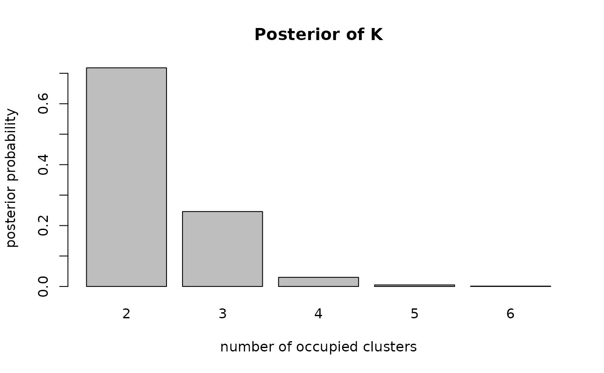
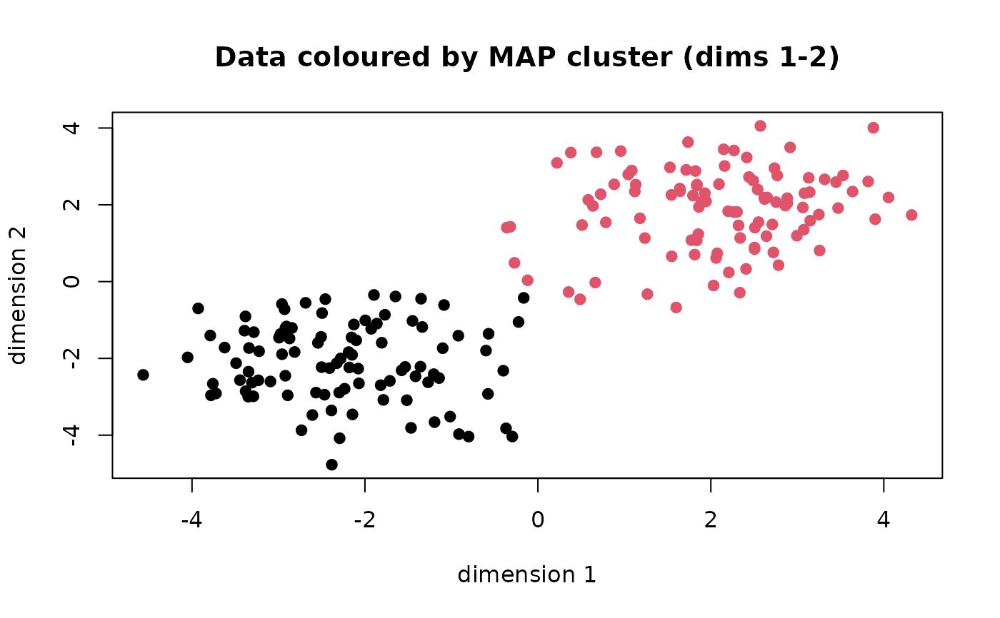

Fit a Bayesian Gaussian mixture model for clustering. Two engines are
available: a finite mixture with a fixed, known number of components
(method = "fixedk", using the argument K) and a Dirichlet
Process Mixture that infers the number of components (method = "dpm",
using the truncation level K_max). The component family (univariate or
multivariate Gaussian) is chosen from the shape of data and the
distribution argument.
Arguments
- data
A numeric vector (univariate) or a numeric matrix with one row per observation and one column per dimension (multivariate). A single-column matrix is treated as univariate.
- K
Integer number of components for the finite mixture (
method = "fixedk"). Required for that method; must not be given formethod = "dpm"(useK_maxthere).- K_max
Integer truncation level for the Dirichlet Process Mixture (
method = "dpm"); the number of components is estimated up to this bound. Because the dCRP sampler errors if the occupied-cluster count ever needs to exceed it,K_maxshould sit comfortably above the expected number of clusters; a generous data-aware default (giving headroom above that count) is used when missing. Must not be given formethod = "fixedk"(useK).- distribution
Component distribution.
"normal"(default) picks the univariate or multivariate Gaussian automatically from the data shape;"normal-uv"/"normal-mv"force a specific one. Student-t / Poisson / Binomial are planned for v0.4.0.- method
Engine:
"dpm"(default; estimate the number of components),"fixedk"(finite mixture with knownK), or"rjmcmc"(planned for v0.5.0, currently errors).- prior
A named list of prior overrides passed to
defaultPrior(univariate:cLoc,nu0; multivariate:cLoc,df0) plus, for the DPM, optionalconcPrior = c(shape, rate)for the concentration, or, for the finite mixture,dirichletConcfor the Dirichlet weight prior.- mcmcControl
A named list with
niter,nburnin,thin.- initMethod
Initialisation for the cluster allocation:
"kmeans"(default, dispersed start) or"single".- seed
Integer RNG seed for reproducibility.
- verbose
Logical; print NIMBLE's configuration and progress output. Defaults to
FALSE(quiet): NIMBLE's compilation notes and the benign dCRP truncation note are silenced, while nimix's own diagnostics (e.g. a censored-posterior warning) and any error still surface. SetTRUEto see NIMBLE's configuration and a progress bar.
Value
A FitResult. Call summary() for
relabelled estimates, plot() for diagnostics, and predict()
for the posterior predictive density.
References
de Valpine, P., et al. (2017). Programming with models ... with NIMBLE. JCGS, 26(2), 403–413. doi:10.1080/10618600.2016.1172487
Neal, R.M. (2000). Markov chain sampling methods for Dirichlet process mixture models. JCGS, 9(2), 249–265. doi:10.1080/10618600.2000.10474879
McLachlan, G.J., & Peel, D. (2000). Finite Mixture Models. Wiley. doi:10.1002/0471721182
Examples
# \donttest{
set.seed(1)
## Univariate, number of clusters estimated (DPM)
y <- c(rnorm(100, -3, 1), rnorm(100, 3, 1))
fit <- nimixClust(y, K_max = 8,
mcmcControl = list(niter = 2000, nburnin = 1000),
verbose = FALSE)
summary(fit)
#> Relabelling MCMC output before summarising (label switching)...
#> nimix mixture summary (engine: dpm, distribution: normal-uv)
#> Observations: 200 (dimension d = 1)
#> Relabelling: ECR-ITERATIVE-1 conditioned on modal K = 2 (718 draws)
#>
#> Posterior of number of occupied clusters:
#>
#> 2 3 4 5 6
#> 0.718 0.246 0.030 0.005 0.001
#>
#> Relabelled component estimates (posterior mean; CIs for univariate):
#> component weight mu_mean mu_lwr mu_upr s2_mean s2_lwr s2_upr
#> 1 0.501 2.94 2.73 3.17 1.28 0.986 1.7
#> 2 0.499 -2.89 -3.10 -2.68 1.15 0.867 1.5
#>
#> Mixing diagnostic (single chain): ESS(alpha) = 668, ESS(#clusters) = 432
#> Note: cross-chain Rhat requires multiple chains (planned v0.9.0).
plot(fit, type = "K")

## Univariate, fixed number of components (finite mixture)
fit2 <- nimixClust(y, K = 2, method = "fixedk",
mcmcControl = list(niter = 2000, nburnin = 1000),
verbose = FALSE)
summary(fit2)
#> Relabelling MCMC output before summarising (label switching)...
#> Warning: Low effective sample size for the cluster count (ESS = 0 of 1000 draws): the chain may be mixing poorly across partitions. Consider a longer run or k-means initialisation.
#> nimix mixture summary (engine: fixedk, distribution: normal-uv)
#> Observations: 200 (dimension d = 1)
#> Relabelling: ECR-ITERATIVE-1 conditioned on modal K = 2 (1000 draws)
#>
#> Posterior of number of occupied clusters:
#>
#> 2
#> 1
#>
#> Relabelled component estimates (posterior mean; CIs for univariate):
#> component weight mu_mean mu_lwr mu_upr s2_mean s2_lwr s2_upr
#> 1 0.499 -2.89 -3.10 -2.68 1.15 0.863 1.53
#> 2 0.501 2.95 2.73 3.18 1.28 0.958 1.69
#>
#> Mixing diagnostic (single chain): ESS(alpha) = NA, ESS(#clusters) = 0
#> Note: cross-chain Rhat requires multiple chains (planned v0.9.0).
## Multivariate (2-D), DPM
Y <- rbind(matrix(rnorm(200, -2), ncol = 2),
matrix(rnorm(200, 2), ncol = 2))
fitMv <- nimixClust(Y, K_max = 8,
mcmcControl = list(niter = 2000, nburnin = 1000),
verbose = FALSE)
summary(fitMv)
#> Relabelling MCMC output before summarising (label switching)...
#> nimix mixture summary (engine: dpm, distribution: normal-mv)
#> Observations: 200 (dimension d = 2)
#> Relabelling: ECR-ITERATIVE-1 conditioned on modal K = 3 (325 draws)
#>
#> Posterior of number of occupied clusters:
#>
#> 2 3 4 5 6 7 8
#> 0.215 0.325 0.243 0.125 0.063 0.023 0.006
#>
#> Relabelled component estimates (posterior mean; CIs for univariate):
#> component weight mu_1 mu_2 var_1 var_2
#> 1 0.0544 0.476 -0.169 2.15 1.557
#> 2 0.4783 -2.267 -2.113 1.02 1.087
#> 3 0.4673 2.109 2.005 1.07 0.942
#>
#> Mixing diagnostic (single chain): ESS(alpha) = 199, ESS(#clusters) = 64
#> Note: cross-chain Rhat requires multiple chains (planned v0.9.0).
plot(fitMv, type = "cluster")

# }